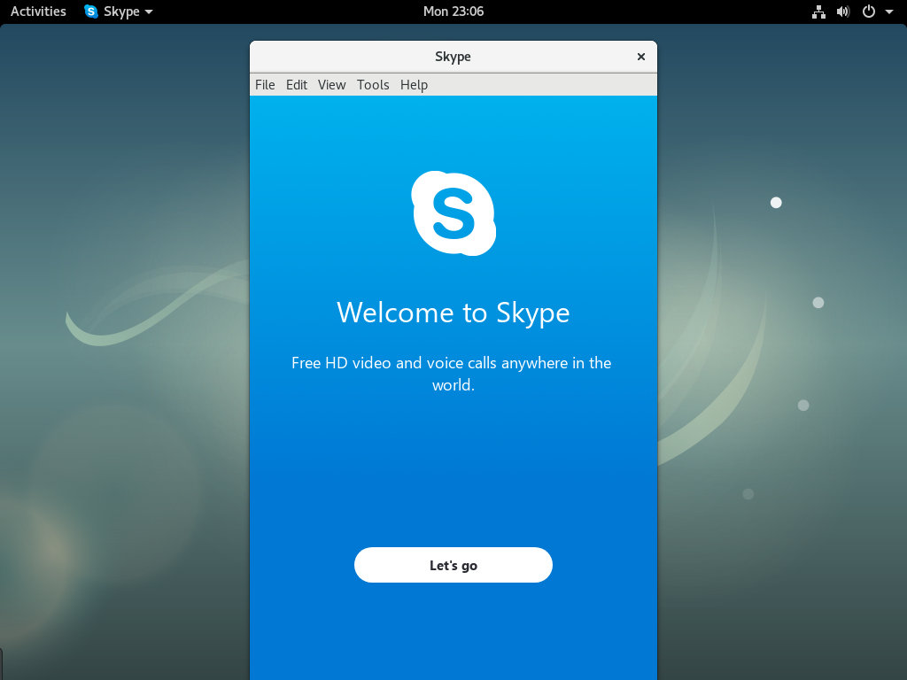

LINUX 教程
如何在 Debian 上安装 Skype
Skype是世界上最受欢迎的通信应用程序之一，它允许您免费进行在线音频和视频通话，并为全球的移动电话和固定电话提供价格合理的国际通话服务。
Skype 不是一个开源应用程序，它不包含在 Debian 存储库中。在本教程中，我们将解释如何在 Debian 9 上安装 Skype。
先决条件
您登录的用户必须具有sudo 权限才能安装软件包。
在 Debian 上安装 Skype
执行以下步骤在 Debian 上安装 Skype。
1.下载 Skype
使用以下 wget 命令打开终端并下载最新的 Skype 的 .deb 软件包：
wget https://go.skype.com/skypeforlinux-64.deb2.安装 Skype
下载完成后，键入以下命令安装 Skype：
sudo apt install ./skypeforlinux-64.deb3.启动 Skype
现在，在 Debian 桌面上安装了 Skype，您可以通过键入 skypeforlinux 或单击 Skype 图标从命令行启动它。
首次启动 Skype 时，将出现如下窗口：

您现在可以使用 Microsoft 帐户登录 Skype，并开始与您的朋友和同事聊天和交谈。
更新 Skype
在安装过程中，官方 Skype 存储库将添加到系统源列表中。使用cat 命令验证文件内容：
cat /etc/apt/sources.list.d/skype-stable.listdeb [arch=amd64] https://repo.skype.com/deb stable main您可以使用桌面软件更新工具或标准 apt 命令更新您的 Skype 安装，就像更新任何其他软件包一样。
结论
在本教程中，您已经学习了如何在 Debian 9 桌面上安装 Skype。